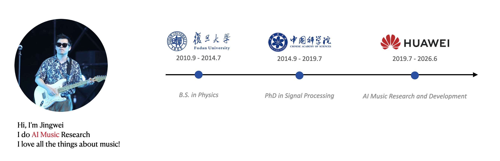

Hi, I’m Jingwei. I do AI Music Research. I love all the things about music!

02 / INTERACTIVE DEMO
MECO · Melody to chords
Bring a MIDI melody. Explore AI-generated harmony.
If the embedded studio has trouble loading or completing a task, open MECO in a separate tab ↗.